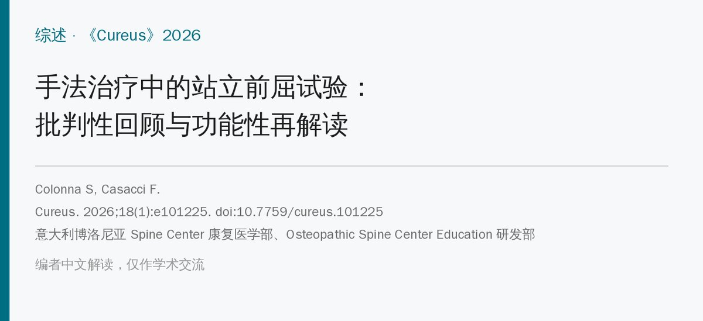
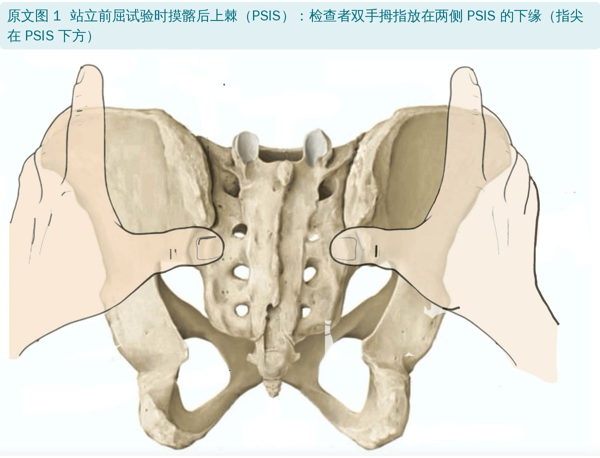
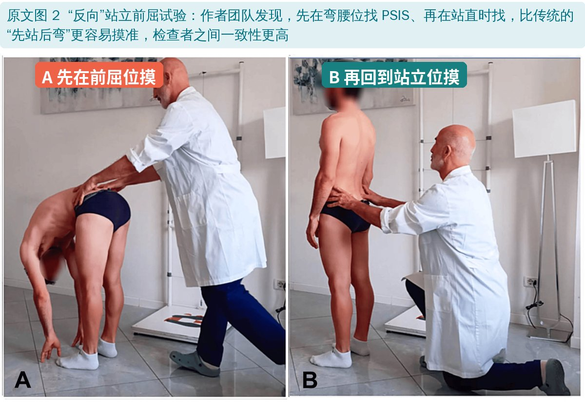
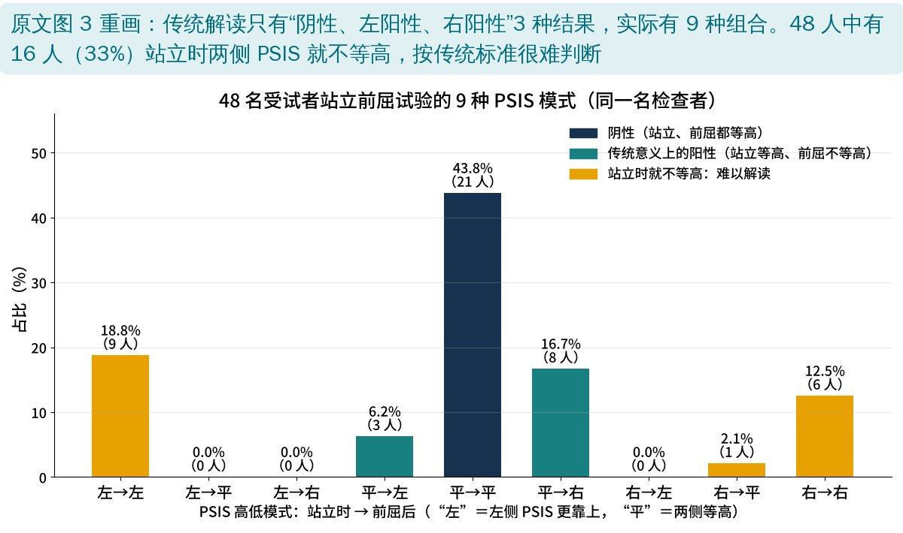
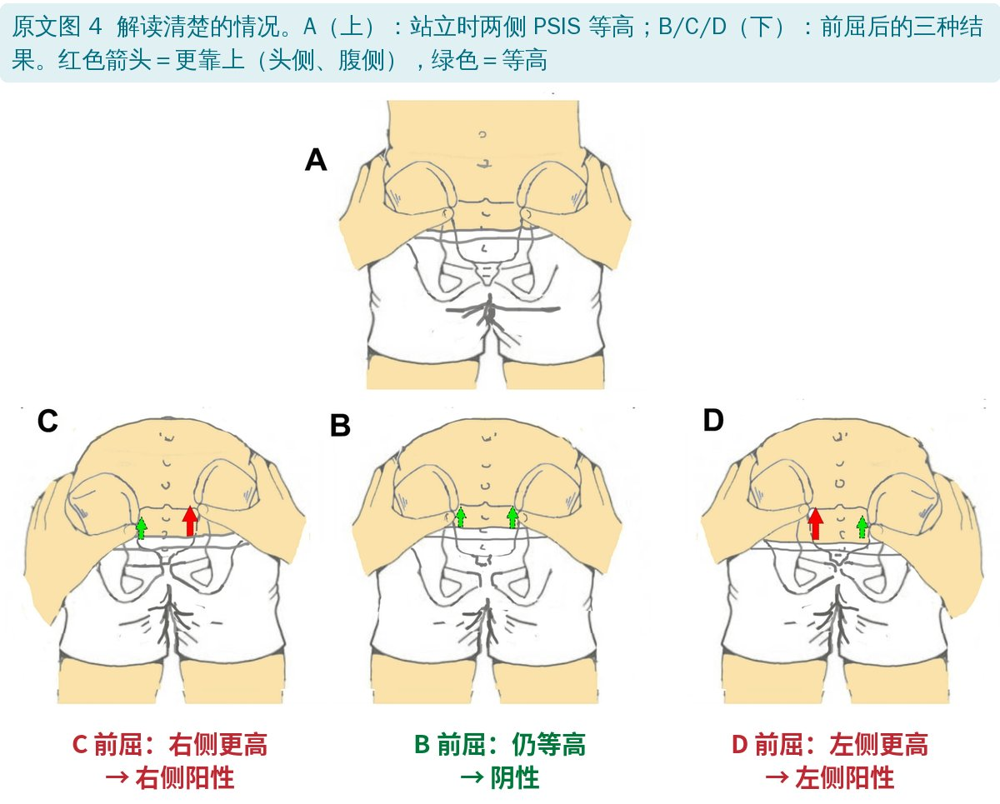
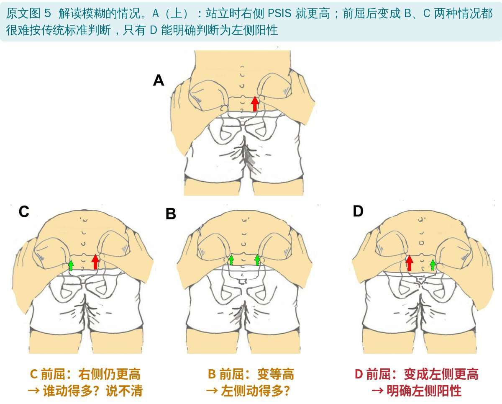
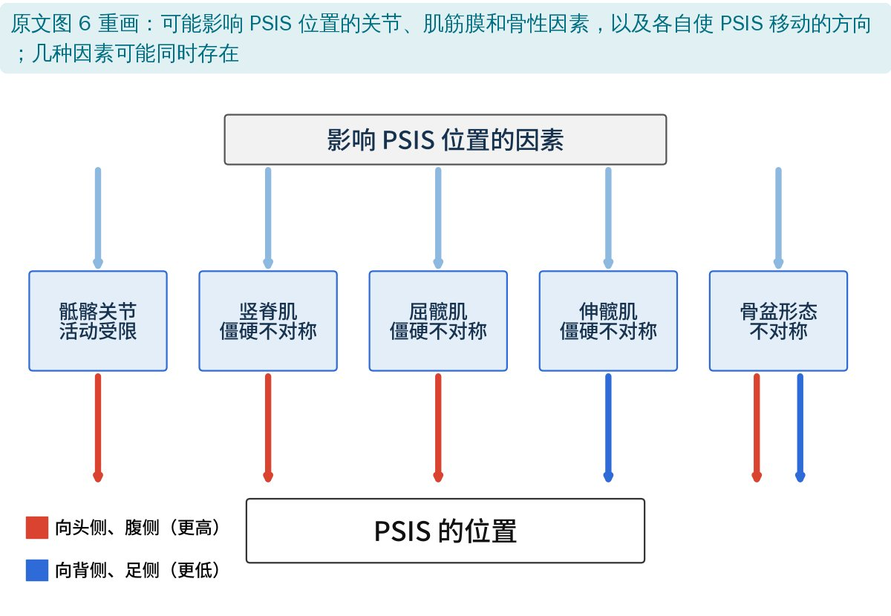
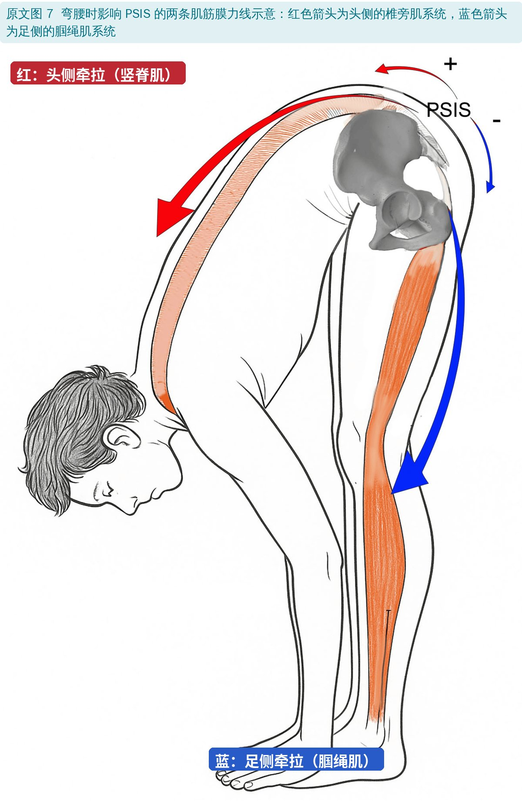
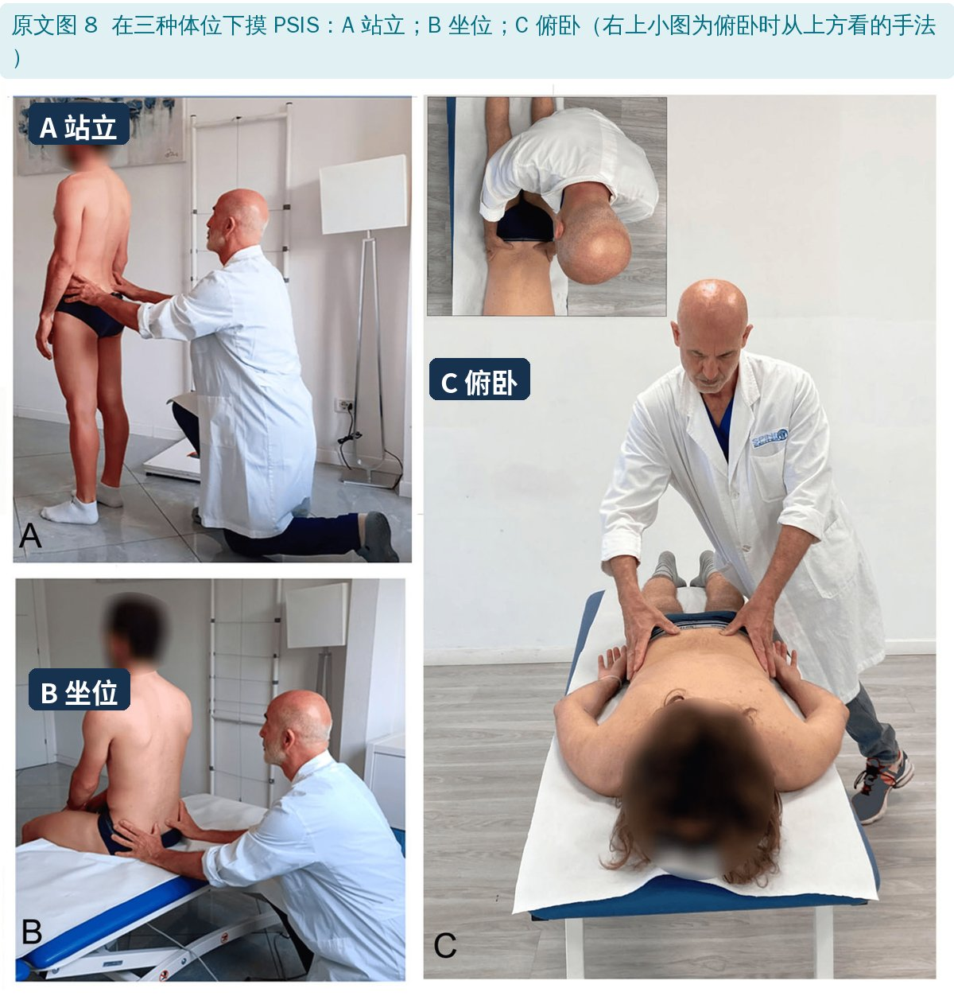
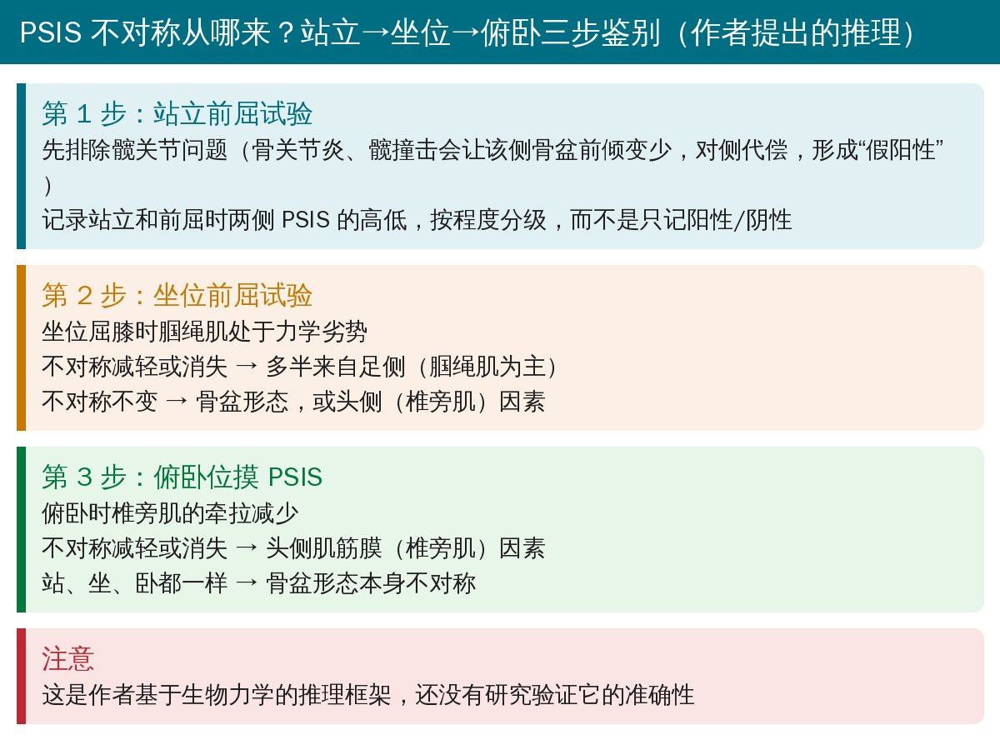

🔖原文信息（编者中文重排）
📚 文献信息
▪ Colonna S, Casacci F. The Standing Forward Flexion Test in Manual Therapy: A Critical Review and a Functional Reinterpretation. Cureus. 2026;18(1):e101225. doi:10.7759/cureus.101225
▪ 作者单位：意大利博洛尼亚 Spine Center 康复医学部、Osteopathic Spine Center Education 研发部
▪ 文章类型：批判性叙述综述（非系统综述，含作者观点和既往研究数据）
站立前屈试验（standing forward flexion test，又叫 Vorlauf 试验、Piedallu 试验）是手法治疗、整骨和整脊里最常教的骨盆检查之一：患者站立，检查者双手拇指按住两侧髂后上棘（PSIS），让患者慢慢弯腰，看哪一侧 PSIS 先向上（头侧）、向前移动或移得更多。
传统解读：哪一侧 PSIS 移得早、移得多，就判为该侧骶髂关节活动受限（“阳性”）。问题在于，这个试验一直在教、一直在用，研究却一再说它不可靠。这篇综述想回答：它还有没有用，是否应该放弃？
• 一篇纳入 13 项研究的系统综述（Cooperstein 和 Hickey）显示，摸 PSIS 判断两侧高低，检查者之间的一致性很差：按样本量加权的平均 kappa 只有 0.27，没有一项研究达到 0.40（中等一致），更别说 0.60（高度一致）
• 同一名检查者重复检查的一致性通常比不同检查者之间高
• 另一篇系统综述发现，学历、临床年资、是否采用统一手法，都没有明显提高摸骨性标志的可靠性
• 但作者团队之前的研究显示：经过专门的标准化培训后，一致性可以明显提高（加权 kappa 0.82，分别评估站立和前屈两个时相时 >0.90）

🔖原文图 1：拇指放在 PSIS 下缘
• 文献多建议摸 PSIS 的下缘，因为这里骨性轮廓变化最明显；但没有证据证明这样最准
• 问题是：PSIS 下缘是骶髂后长韧带的附着点，它经骶结节韧带和腘绳肌（尤其股二头肌）相连。弯腰时腘绳肌被拉紧，韧带张力增加，指尖容易被“顶开”而丢失骨性接触；检查者为了不丢点往往加大按压，又可能影响患者平衡
• 有些人的 PSIS 是扁平的骨板而不是明显的突起，“最后方的点”本身就不确定

🔖原文图 2：“反向”站立前屈试验
作者团队的经验是倒过来做：先在弯腰位找 PSIS，再在站直时找。回到站立的过程中更容易保持稳定的按压，标志点摸得更准，一致性也更高。整骨文献中 Mitchell 也提过类似的“新站立前屈试验”：从前屈回到直立时，先向后移的一侧为阳性。
• 这其实是“视觉＋触诊”试验：手只负责找到点，判断两点连线是否水平要靠眼睛——闭着眼睛是答不出来的
• 因此培训要专门练视觉判断：多少毫米的差别还算“对称”？3、4、5 mm 的差别不借助工具很难分辨
• 作者团队的培训包括触觉敏感度练习、用激光装置练习识别下肢长度差、在骨骼模型和真人身上实操
• 作者还建议排除视物变形症等视觉问题
传统只有 3 种结果：阴性、左侧阳性、右侧阳性。但如果分别记录站立时和前屈后两侧 PSIS 的高低，实际有 9 种组合：

🔖原文图 3 重画：48 人的 9 种模式

🔖原文图 4：解读清楚的 3 种情况

🔖原文图 5：解读模糊的情况
• 解读清楚的：站立时两侧等高，前屈后仍等高（阴性），或前屈后一侧更高（该侧阳性）
• 解读困难的：站立时右侧就更高，前屈后仍是右侧更高——到底哪边移得多？说不清；站立右高、前屈变等高——其实是左侧移得更多，但最终“看起来对称”
• 作者团队的数据中，48 人有 16 人（33%）站立时两侧 PSIS 就不等高；而作者认为最不模糊的“右→左”模式，48 人中一个都没有
作者从三个层面论证：站立前屈试验不能作为骶髂关节病变的诊断试验。
• 内容效度：它在整骨传统中本来就是用来观察腰骨盆的功能性不对称，不是用来找病变的
• 结构效度：骶髂关节本身的活动度极小（立体放射测量显示转动约零点几度到几度、平移不到 1～2 mm），不足以在触诊中产生明显的 PSIS 差异；而骨盆本身的形态不对称常达 4～10 mm
• 效标效度：没有任何研究显示它和骶髂关节内麻醉阻滞（诊断骶髂痛的金标准）相关
• 1994 年 Dreyfuss 等把它当诊断试验去检验，发现无症状的人也常常“阳性”；后续 Laslett、Szadek 等的系统综述都确认：活动度/位置类检查对骶髂痛没有诊断价值，只有疼痛激发试验（大腿冲击、挤压、分离、骶骨冲击）组合使用时才有一定价值
| 传统解读 | 功能性再解读 | |
|---|---|---|
| 主要目的 | 评估骶髂关节活动度 | 评估腰骨盆的运动模式 |
| 结果形式 | 二分类（阳性/阴性） | 分级或分类的不对称程度 |
| 关注部位 | 骶髂关节 | 整个腰骨盆系统（骶髂、髋、脊柱、肌筋膜） |
| 生物力学假设 | PSIS 移得多＝同侧骶髂关节活动受限 | PSIS 运动反映腰骨盆和肌筋膜的整体动力学 |
| 肌筋膜的作用 | 不考虑或很次要 | 调节骨盆运动的核心因素 |
| 髋和脊柱活动度 | 通常忽略 | 明确纳入考虑 |
| 诊断价值 | 被当作骶髂关节功能障碍的诊断试验 | 非诊断性的功能评估工具 |
| 推荐用途 | 识别骶髂关节功能障碍 | 识别功能性不对称和运动策略 |
原文表 1：站立前屈试验传统解读与功能性再解读的对比（中文翻译）

🔖原文图 6 重画：影响 PSIS 位置的因素
• 髋关节活动度：弯腰时约 65% 的活动来自髋。一侧髋僵硬（如骨关节炎）时，该侧骨盆前倾少，对侧代偿多，按传统标准会在活动更好的那一侧出现“阳性”
• 腘绳肌（足侧因素）：两侧腘绳肌长度、僵硬度常不对称，会影响弯腰时骨盆前倾
• 竖脊肌（头侧因素）：正常弯腰到一定程度时竖脊肌会放松（屈曲-放松现象）；如果一侧持续收缩，可能把该侧 PSIS 往头侧拉
• 屈髋肌：髂腰肌体积在健康人中两侧常差 4%～13%，可能造成站立时两侧骨盆倾斜不同
• 骨盆形态：CT 显示 159 个骨盆中 157 个（98.7%）两侧最大差异 >4 mm，17% 超过 10 mm——不对称是常态
• 下肢不等长被作者有意排除：它带来的骨盆代偿是三维“扭转”，没有固定模式

🔖原文图 7：头侧和足侧两条肌筋膜力线

🔖原文图 8：站立、坐位、俯卧三种体位摸 PSIS

🔖站立→坐位→俯卧三步鉴别（编者根据原文整理）
• 用之前先用临床检查排除髋关节问题（骨关节炎、髋撞击等），因为髋僵硬会减少骨盆活动
• 结果分级记录，而不是只记阳性/阴性；就像 Lachman 试验分 1+、2+、3+ 一样
• 是观点性综述：作者明确说不是系统综述，文献选择和解读带有作者立场；作者本人是整骨/手法治疗教育机构的成员
• “培训后一致性高”主要来自作者团队自己的研究，而作者也引用了另一篇系统综述说培训和经验并不能提高触诊可靠性，两者之间的矛盾没有充分讨论
• 功能性再解读同样没有被验证：站立→坐位→俯卧的鉴别逻辑、肌筋膜牵拉方向，都是基于生物力学的推理，没有和三维运动分析、肌肉僵硬度测量对照过；作者也把这些列为未来研究方向
• 结论可取：不要再把站立前屈试验当作骶髂关节病变或骶髂痛的诊断试验，这和主流证据一致
• 作者在致谢中说明使用了 ChatGPT 做语言润色和结构调整
• 骶髂关节活动度数字自相矛盾：同一段落引用同一篇文献，先说转动 0.2°～0.6°，紧接着又说平均约 2.5°（0.8°～3.9°）；随后又说 PSIS 高度差是“厘米级”，而前文列出的骨盆不对称是 4～10 mm
• 信度定义写反了：文中两次写“一个试验只有既有效又可重复，才能算可靠”——可靠性（信度）并不以有效性为前提，通常的说法是“有效的试验必须先可靠”
• 图号错误：讨论俯卧位摸 PSIS 时引用“图 7C”，实际是图 8C
• 段落错放：介绍“效度”的段落中重复插入了一句与上下文无关的“选择 PSIS 和站立位的理由”
• 图 4 图注：漏掉了 C 图的说明，把“右侧阳性”和“左侧阳性”都对应到 A、D
• 用词：“anonymous rotational asymmetry”应为 innominate（髋骨）；原文图 6 中 asymmetry 拼成 “asimmetry”
• 不要用站立前屈试验诊断骶髂关节病变或骶髂痛：怀疑骶髂痛时，用疼痛激发试验组合（大腿冲击、挤压、分离、骶骨冲击等），必要时影像引导下阻滞
• 想用它看运动模式：可以作为弯腰时腰骨盆节律是否对称的观察工具，并结合髋活动度、腘绳肌长度、竖脊肌张力一起看
• 先看站立时是否等高：站立时就不对称的，前屈结果很难按传统标准解读，记录“站立→前屈”的组合模式更有信息量
• 摸不准时试试“先弯后站”，并分级记录不对称程度
• 教学中应讲清它能回答什么、不能回答什么，并专门训练视觉判断
欢迎关注骨科康复小黄公众号，获取更多物理治疗的专业知识！
📄参考文献：
Colonna S, Casacci F. The Standing Forward Flexion Test in Manual Therapy: A Critical Review and a Functional Reinterpretation. Cureus. 2026;18(1):e101225. doi:10.7759/cureus.101225
原文以 CC BY 4.0 协议开放获取，版权归原作者所有。本文为学术交流中文解读：原文图 1、2、4、5、7、8 引自原文，图中中文标签和说明为编者所加；图 3 和图 6 由编者根据原文用中文重画，鉴别流程卡为编者整理，表格为中文翻译。仅供学习交流，如有侵权请联系删除。